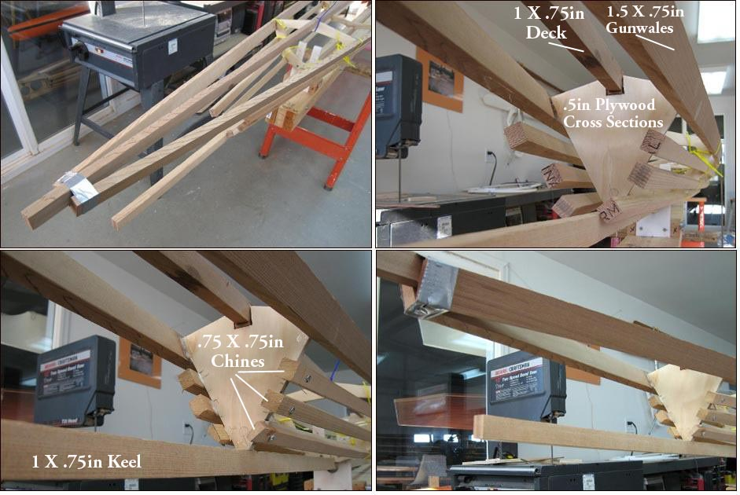

| Nikumi "Bifid" bow details ( 1 of 4) | Menu Previous Page Next Page |
|

The "Nikumi" bifid bow under construction. Cross section 0 was added during construction at the front for attachment of the stringers. The Nikumi 19 has offsets provided for this section. If the stringers can be pinched closer together at this section, notches can then be cut into the cross section. The narrower this area, the easier the skinning will be at the bow split ( bifid). This extra cross section should be located appox. 20 inches ahead of cross section 1...if needed , but only if the stringers will not attach directly to the bow plate. This will vary between builders.
|
|